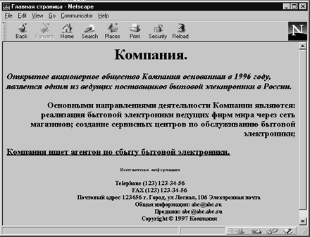

| Тэг | Значение |
|---|---|
| <ЕМ>... </ЕМ> | Типографское усиление |
| <СIТЕ>...</СIТЕ> | Цитирование |
| < STRONG >.</ STRONG > | Усиление |
| <СODE>... </СОDE> | Отображает примеры кода (например, коды программ) |
| <SАМР>... </SАМР> | Последовательность литералов |
| <КВD>... </КВD> | Пример ввода символов с клавиатуры - |
| <VAR>...</VAR> | Переменная |
| <DFN>... </DFN> | Определение |
| <Q>- </Q> | Текст, заключенный в скобки |
Все эти тэги допускают вложенность и пересечение друг другом, поэтому все они имеют тэг начала и конца. При использовании этих тэгов следует помнить, что их отображение зависит от настроек программы-интерфейса пользователя, которые могут и не совпадать с настройками программы-разработчика гипертекста. Использование стилей, которые подменяют настройки интерфейса, в настоящий момент проблематично.
Пример 1.5. Использование тэгов, управляющих формой отображения.
<HTML> <HEAD> <TITLE> Главная страница</TITLE> </HEAD> <BODY> <H1 ALIGN=CENTER>Компания.</H1> <H3 ALIGN=LEFT><I>Открытое акционерное общество Компания основанная в 1996 году, является одним из ведущих поставщиков бытовой электроники в России.</I></H3> <H3 ALIGN=RIGHT><B>Основными направлениями деятельности Компании являются</B>: реализация бытовой электроники ведущих фирм мира через сеть магазинов; создание сервисных центров по обслуживанию бытовой электроники;</H3> <H3><U> Компания ищет агентов по сбыту бытовой электроники.</U></H3> <H5 ALIGN=CENTER><TT>Контактная информация</TT> <DL>Telephone (123) 123-34-56 <DL>FAX (123) 123-34-56 <DL>Почтовый адрес 123456 г. Город, ул Лесная, 106 <DL>Электронная почта <DL>Общая информация: abc@abc.su <DL>Продажи: abc@abc.abc.su</DL></CENTER></H5> Copyright љ 1997 Компания </BODY> </HTML>

Рис. 1.5. Тэги отображения стилей текста
Щелкните здесь, чтобы просмотреть пример 1.5 в браузере
Использование тэга списка (Definition List: <DL>) напоминает применение отступов в обычных текстовых редакторах. Тэг <DL> был создан для форматирования текста, определяющего какой-то термин. Определяемый термин записывается на одной строке, а его определение на следующей, с небольшим отступом вправо. Тэг <DL> позволяет создавать отдельные абзацы с отступом без нумерации или маркеров. Отступ делается от левого края. Если у вас на странице несколько тэгов <DL>, то текст постепенно сдвигается все больше вправо. В конце определения поместите закрывающий тэг </DL>. Помните, что тэг <DL> сдвигает только левую границу абзаца.
Назад | Содержание | Вперед